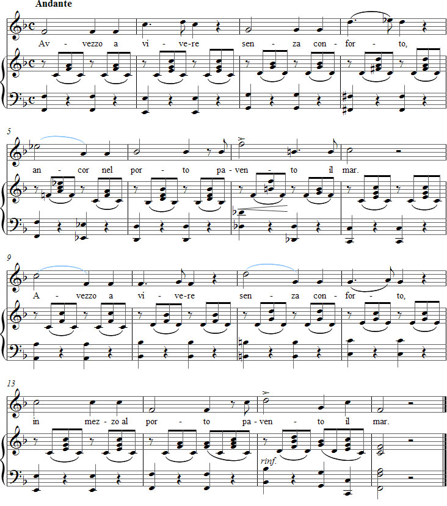

Vaccaj – Harjoitus 2b
Kuuntele äänite
Nuotit

Tehtävä 2b
Intervalli di quinta
Kvintti-intervalleja
mukavuutta, pelkään satamassa
merta.
Esitysohjeet
Tässä tehtävässä opitaan kvintti-intervalli, johon Vaccaj antaa laulun 16 tahdissa yhteensä 10 harjoitusmahdollisuutta. Laulun puolinuotit ja pisteelliset neljäsosat sopivat myös messa di voce -harjoitteluun (äänen paisuttaminen).
Viisitavuisen runon useimmat sivupainotukset osuvat toiselle tavulle. Tämän olisi voinut luulla innoittavan Vaccajn aloittamaan laulun nousutahdilla, mutta hän ei kuitenkaan pelkää antaa musiikin ja runon olla eripuraisia jo ensimmäisessä fraasissa. Vasta runon viimeisellä rivillä, eli neljännessä ja kahdeksannessa fraasissa, melodia sopeutuu tekstiin ja säästää samalla sanan pavento ”suomalaiselta” painotukselta.
Harjoitteluohjeita
Tässä tehtävässä ensimmäistä kertaa Metodo praticossa pianosäestys ei kaksinna melodiaa. Siksi laulajalla on hyvä mahdollisuus tutkia kvinttejä vaikkapa terssien ja asteikon sävelten avulla. Kun useassa kvinttihypyssä ensimmäinen ääni on puolinuotin pituinen, se voidaan jakaa esim. kahteen neljäsosaan tai neljään kahdeksasosaan. Melodia voi saada silloin esimerkiksi seuraavan muodon:
re - re - fa - la - si - la
mi - mi - sol - si - do2 - si
do2 - si - la - sol - fa - fa - sol - sol
sol - re2 - sol - sol - la
la - sol - fa - mi - re - re - re - mi - re
si - la - sol - fa - mi - mi - mi - fa - mi
la - la - fa - re - re
la - si - mi - la - sol - fa - mi - re

Sana paventi voi olla avain tekstivalintaan. Jotta oppilas saisi tilaisuuden harjoitella myös ”ilkeää”, vähennettyä kvinttiä eli tritonusta, tarvitaan sen perusteeksi kielteinen sana.
Melismat tahdeissa 4 ja 12 yrittävät siirtää legatoa spontaanisti kvinttihyppyyn.
Puolinuoteissa on laulettava konsonantit niin myöhään kuin mahdollista. Muutoin voidaan olla lähellä tilannetta, jossa nasaalit rönsyilevät.
Hidas andante-tempo pakottaa oppilaan kannattelemaan fraasia. Ilmanpaineen täytyy olla niin joustava (lieve), että ylöspäinen kvintti ei aiheuta tahattomia aksentteja kahdeksasosilla tahdeissa 2, 4, 10 ja 12. Messa di voce -äänet pisteellisillä neljäsosilla auttavat oikeaan laulutapaan.
Muuttamalla tekstin muotoon pavento il Vaccaj antaa erilaisia vokaaleja eri äänille. Näin hän saa muun muassa yhden kvinttihypyn molempien viimeisten tahtien välille.
Laula joskus la-si-la tahdissa 13 parantaaksesi sanapainotusta.
Ajatuksia tulkinnasta
Loppurepliikki resitatiivissa, joka edeltää tätä aariaa oopperassa Demetrio, on Dubito ancora, so. Minä epäilen jatkuvasti. Vakavuus laulun takana voi olla syy painokkaan tempon valintaan.
Jotta runo ja musiikki sulautuisivat yhteen, täytyy energia suunnata fraasin viimeiselle painotetulle tavulle. Esimerkiksi aksentti sanassa pavento ei saa olla niin voimakas, että runon viimeinen sana mar jää huomiotta. Oikealla fraseerauksella tulee myös luonnollisella tavalla esille, että conforto ja porto sopivat yhteen, ”rimmaavat”.
Käytä vähitellen kevyttä portamentoa tahdeissa 5, 9 ja 11. Aksentit tahdeissa 7 ja 15 voivat toimia kontrastina tällaiselle ”laskettelulle”.
Melkein kaikkia puolinuotteja voidaan koristella kaksois- tai jälkiheleillä. Kokeile välillä myös kaksoispisteyttää tahdeissa 2, 4, 7, 10 ja 12.
Voit muuttaa puolinuotit tahdeissa 6 ja 14 samoiksi kuvioiksi kuin tahdeissa 4 ja 12.
Kunnostaudu laulamalla tempo rubato.
Pianistin pitää säestää ilmavasti myös hitaassa tempossa.
Muuta
Vaccaj käytti alun perin nelirivistä runoa, jonka kolmas rivi on ancor nel porto, ei suinkaan in mezzo al. Myöhemmin kustantajat ovat muuttaneet ja lisäilleet tekstiä, jolloin erilaisia versioita on lähtenyt maailmalle. Ohessa käytetty nuotti sisältää kompromissina molemmat variaatiot: ancor... tahdissa 5 ja in mezzo... tahdissa 13. Myös laulunäytteissä voi huomata eroja siinä, minkä kustantajan nuottia laulaja on harjoitellessaan käyttänyt.
Forshufvud, G. 1994. Con lieve fiato. Lärarhandledning till Nicola Vaccajs Metodo pratico. Göteborgs universitetet.